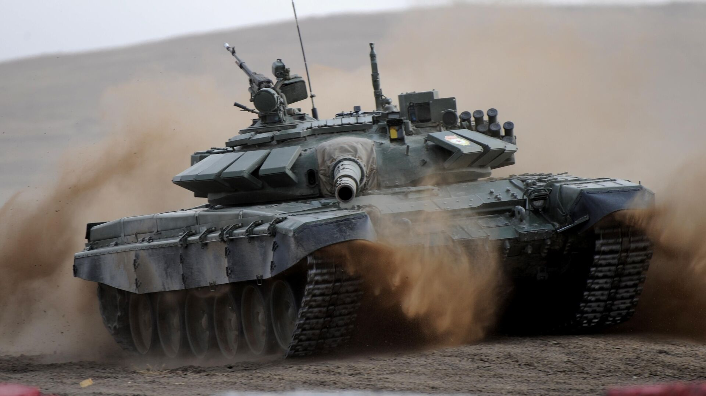

Основной боевой танк Т-72

Т-72 «Урал» — послевоенный советский средний и основной танк.
- Самый массовый танк второго поколения.
- Принят на вооружение в Вооружённых Силах СССР с 1973 года.
- Т-72 разработан и производился Уралвагонзаводом в Нижнем Тагиле.
Главный конструктор машины — В. Н. Венедиктов.
Т-72 Википедия